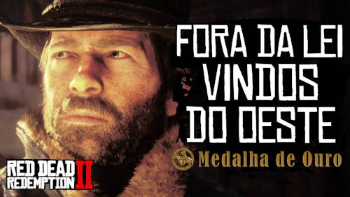
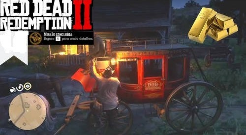
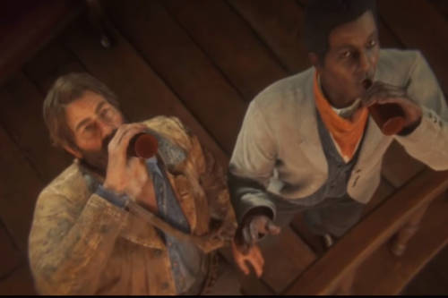

Dicas, mapas, estratégias e tudo o que você precisa para conquistar 100% desse impiedoso velho-oeste.
Para mais conteúdos iguais a este se inscreva no nosso canal do Youtube.
CAPÍTULO 1
Após um roubo frustrado, a gangue fugiu de Blackwater até as montanhas de Grizzlies, mas uma tardia tempestade primaveril os deixou quase congelados e famintos.
Eles se abrigam em uma cidade mineradora abandonada para se recuperar e esperar que o tempo melhore.
O jogo começa com a gangue na parte norte do mapa, presos em uma nevasca e fugindo da lei.
FORA DA LEI VINDOS DO OESTE
- Não sofra dano no tiroteio.
- Saqueie 6 ou mais itens do rancho Adlers.
- Conclua com pelo menos 80% de precisão.

ASSOMBRADO POR UMA LEMBRANÇA.
- Mate todos os lobos.
- Conclua com pelo menos 80% de precisão.
VELHOS AMIGOS
- Capture e amarre Kieran em menos de 45 segundos.
- Mate 3 O'Driscolls com um uso dos olhos da Morte.
- Conclua a missão em menos de 15m30s.
- Acerte 15 tiros na cabeça.
- Conclua a missão sem consumir itens de Vida.
AS CONSEQUÊNCIAS DA GÊNESE
- Mate cada veado com uma única flecha.
- Não espante nenhum veado.
- Faça um abate limpo do segundo veado.
QUEM DIABOS É LEVITICUS CORNWALL?
- Salve o Lenny quando ele estiver pendurado no trem.
- Elimine os guardas em menos de 1m30s após parar o trem.
- Acerte 10 tiros na cabeça.
- Conclua a missão sem consumir itens de Vida.
RUMO AO LESTE
- Pegue o Javier ao entrar no Mirante Horseshoe.
- Conclua a missão em menos de 6 minutos.
CAPÍTULO 2
Após o tempo melhorar, a gangue desce as montanhas e segue em direção ao Mirante Horseshoe.

ALTA SOCIEDADE NO ESTILO DE VALENTINE
- Devolva o cavalo da carroça que se perdeu o dono.
- Encontre a Kares em menos de 45 segundos.
O DESCANSO AMERICANO
- Salve o Javier em menos de 15 segundos.
- Derrote o Tommy em menos de 1m30s.

PROCURADO POR UM EGO FERIDO
- Rastreie o urso em menos de 1m30s.
- Atire 6 vezes no urso.
- Conclua a missão em menos de 12 minutos.
FAZENDO UMA VISITINHA
- Mate 4 O'Driscolls silenciosamente.
- Acerte 12 tiros na cabeça.
- Conclua com pelo menos 80% de precisão.
- Conlua a missão sem consumir itens de Vida.
O BOM E HONESTO ÓLEO DE COBRA
- Impeça que o Benedict Allbright em menos de 1m15s.
- Amarre Allbright em menos de 1m15s.
- Leve o Allbright ao xerife em menos de 1m30s.
DICA IMPORTANTE:> ao jogar o laço em Allbright na parte mais calma da correnteza, solte os gatilhos do controle e atravesse o rio com o cavalo.
Só então desça do animal e amarre o fugitivo.Isso otimiza o tempo entre os dois últimos objetivos secundários.
Além disso, o cavalo de Allbright possui um pouco mais de fôlego do que o seu, caso esteja rejogando a missão.
TEMPO DE CALMARIA
- Tente fazer as pazes com um velho rivel.
- Flagre o Lenny no ato.
- Não seja preso.
DICA IMPORTANTE:> logo após as primeiras cenas no bar, converse com o sujeito que o importunava Arthur e Lenny em uma mesa em frente ao balcão.
Interaja quantas vezes for possível, até Arthurperguntar se ele viu Lenny.
Depois, na terceira vez que estiver procurando Lenny, suba para o quarto 1A(à esquerda) para encontrar Lenny em um momento íntimo.
Por fim, na parte final da missão fuja pelo beco do lado de fora, vire à direita e não erre a ação de pular a cerca.

A missão de beber com Lenny é uma das mais divertidas do jogo.
AQUELE QUE NUNCA PECOU
- Vença 2 rodadas de pôquer.
- Leve o Reverendo ao acampamento em menos de 2m5s.
AGIOTAGEM E OUTROS PECADOS - PARTE III
- Conclua em menos de 2m10s.

BEM-AVENTURADOS OS MANSOS?
- Mate as autoridades a cavalo em menos de 55s ao fugir.
- Acerte 15 tiros na cabeça.
- Conclua com pelo menos 70% de precisão.
- Conclua a missão sem consumir itens de Vida.
OS PRIMEIROS SERÃO OS ÚLTIMOS
- Mate os caçadores de recompesa silenciosamente à margem do rio com o Javier.
- Atire na corda para libertar o Sean.
- Acerte 10 tiros na cabeça.
- Conclua a missão sem consumir itens de Vida.